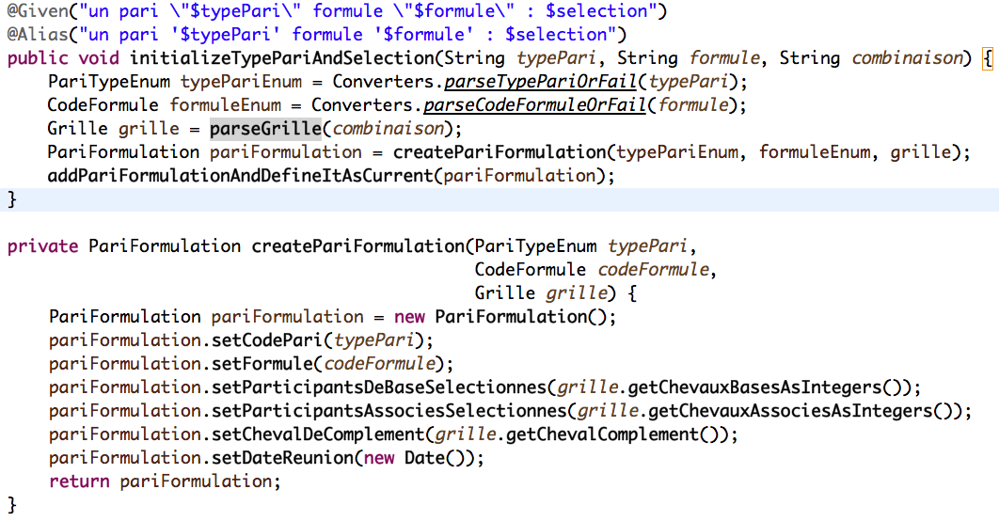
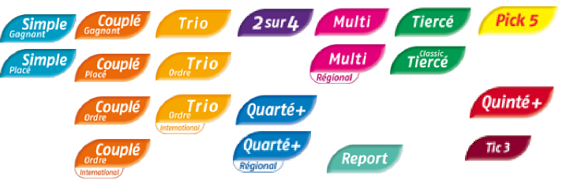
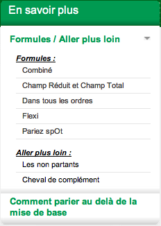
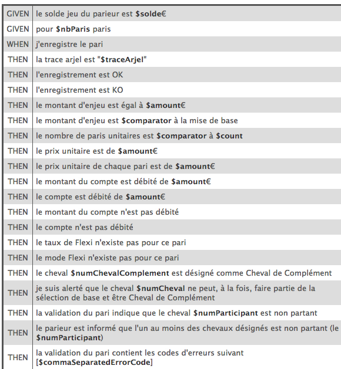
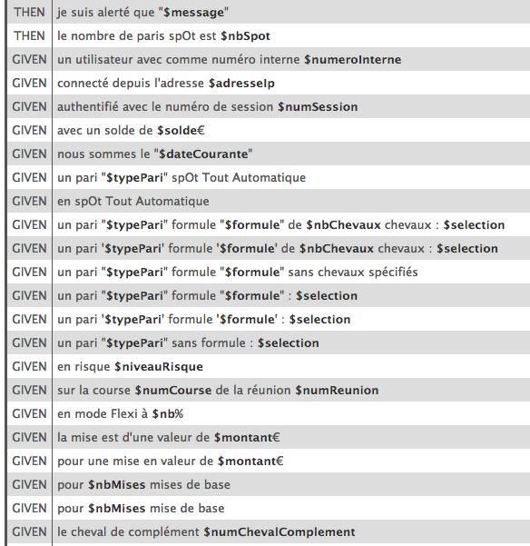
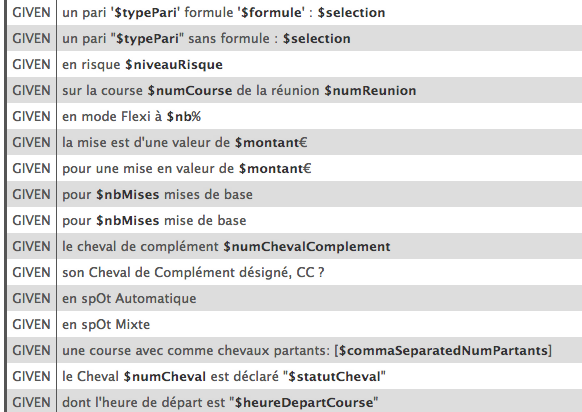

beforework BDD
Du concrets!
Notre première “Story”
Qui est concerné?
En tant que participant à cette présentation
Pourquoi êtes-vous venu?
Pour manger des croissants!
Afin de ressentir les bénéfices de l'approche BDD
Quelles sont vos attentes?
Je veux que des cas concrets soient présentés
Quelles seraient les critères d'acceptances?
Comment définir les fonctionnalités attendues?
Les scénarios
Notre premier “Scénario”
Scenario: Commençons par la fin et montrez-nous des résultats!

Le S.I.!

La prise de pari

Le résultat!


Scenario: Commençons par la fin et montrez-nous des résultats!
Etant donné un SI très complexe

Et une mise en application chez un client
Quand on observe les résultats
Alors on se dit qu'en y allant petit à petit c'est possible
Scenario: A quoi ressemble un scénario!
Scenario: A quoi ressemble un scénario!
Scenario: A quoi ressemble un scénario!
Scenario: A quoi ressemble un scénario!
Scenario: A quoi ressemble un scénario!
Le lien avec le code
Promis y en aura pas d'autre 
Scenario: A quoi ressemble un scénario!
Etant donné un SI très complexe
Et une mise en application chez un client
Quand on regarde les scénarios
Alors on voit qu'il est possible de tester des cas nominaux
Une idée des combinatoires possibles de formulation
 Travail collaboratif:
  
Au départ: Deux à trois scénarios écrits par "Story"